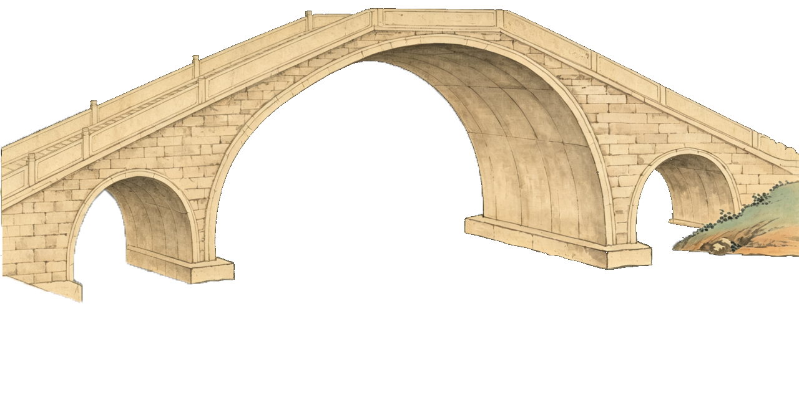
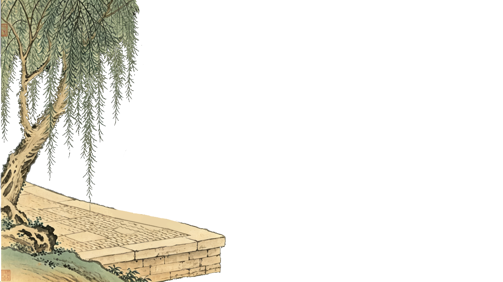
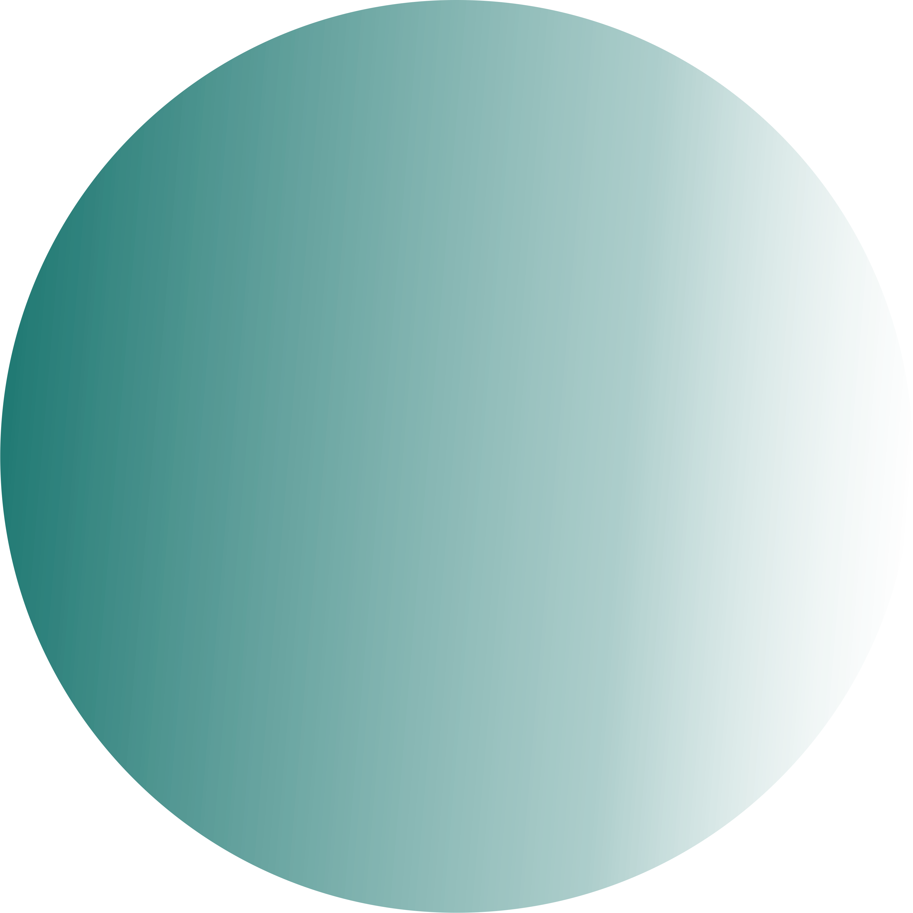
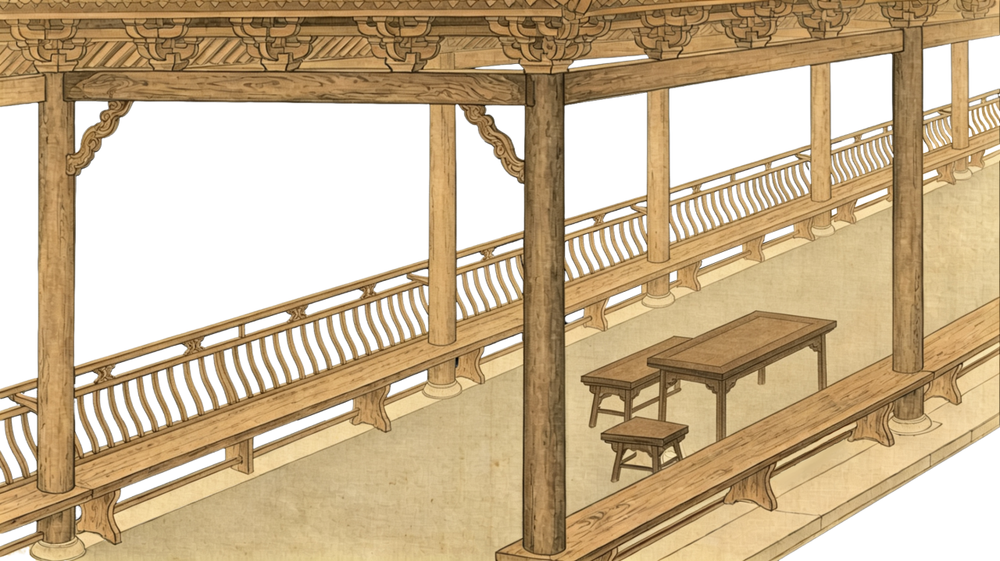
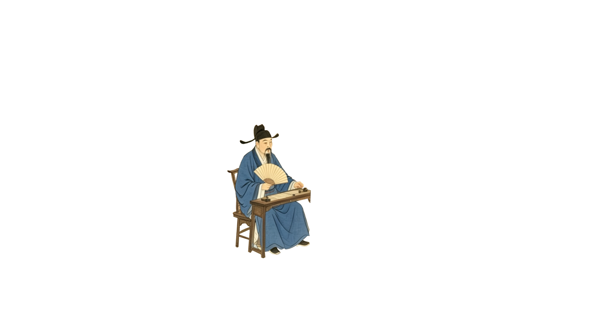
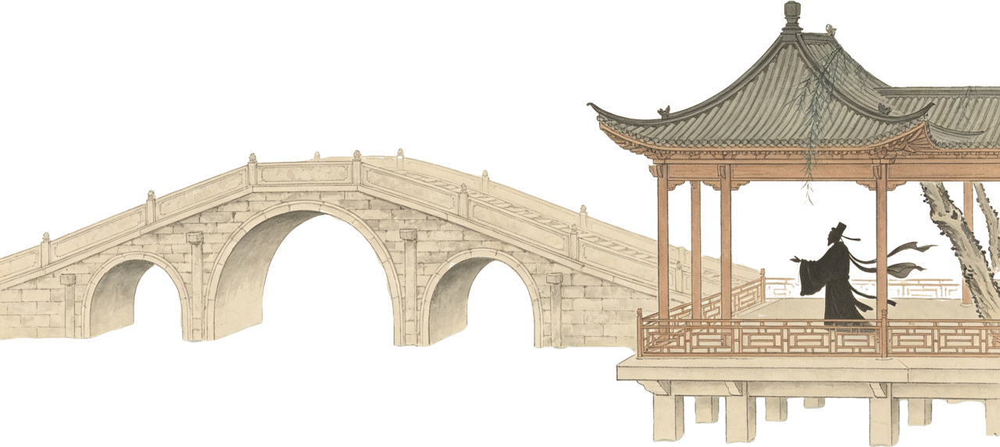
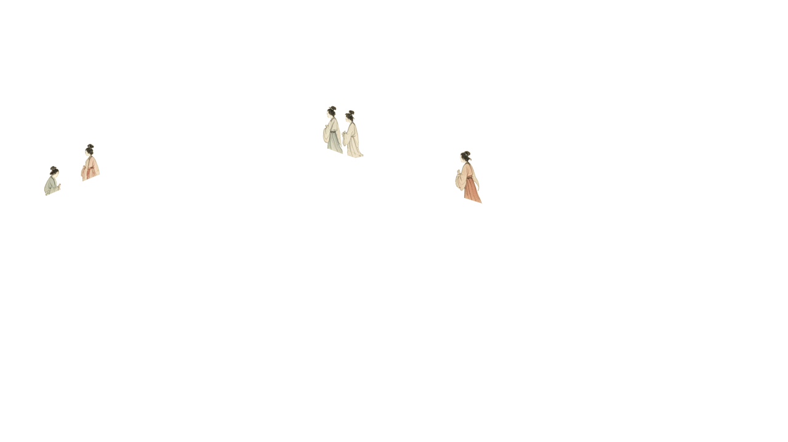
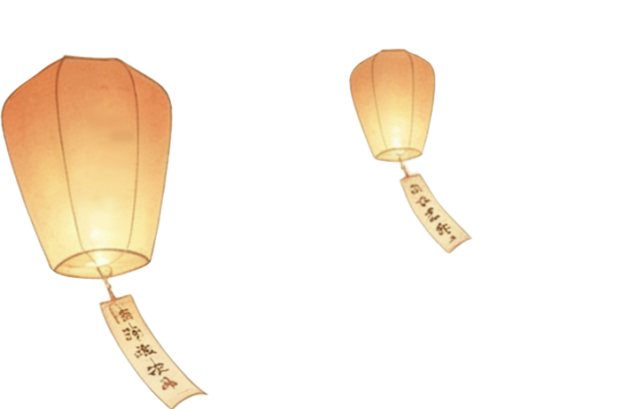
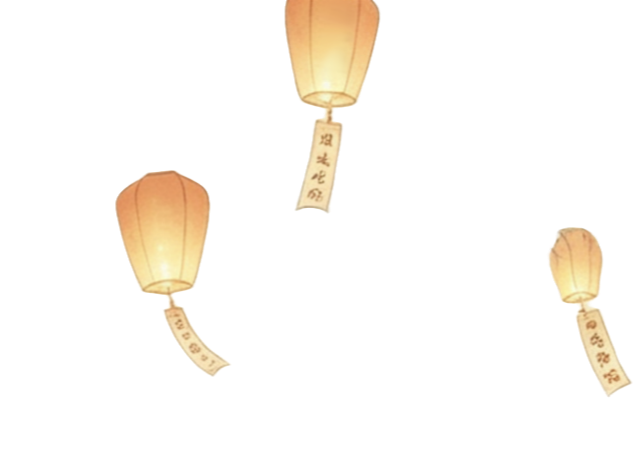
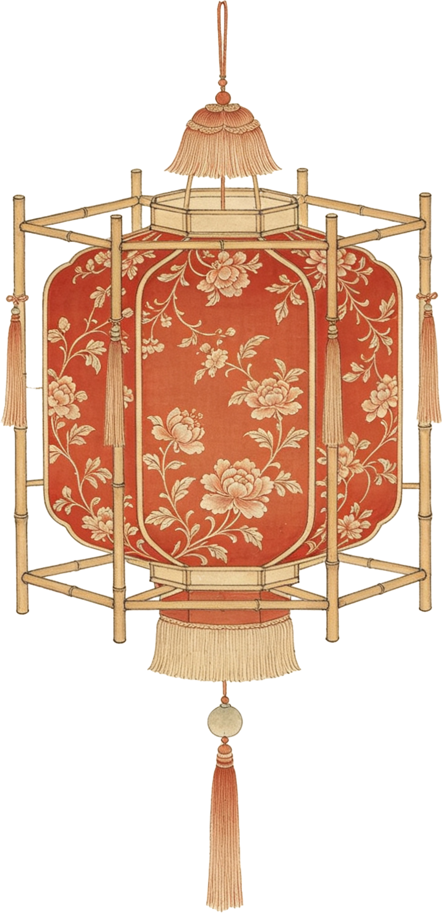

折柳寄情
古人送别时会折柳相送：柳树生命力顽强，随手栽种就能成活，以此祝愿远行之人在外平安顺遂、扎根立足；“柳”与“留”谐音，寄托着不舍与挽留的心意；加之柳枝随手可折，方便在送别时取用，久而久之便形成了折柳送别的传统习俗。


【东方第一桥】灞桥始建于秦、扩建于汉，是古代长安城东重要的交通枢纽，也是连接中原与关东地区的关键通道，自古便兼具交通、军事与礼仪功能。这里还是古代折柳送别习俗的发源地，自汉代起，人们送客至此便折柳相赠，以寄挽留与祝福之意。这一传统让灞桥成为文人寄托离愁别绪的核心意象，也让它从一座实用桥梁，升华为承载离别情感与文化仪式的标志性符号。

古人送别时会折柳相送：柳树生命力顽强，随手栽种就能成活，以此祝愿远行之人在外平安顺遂、扎根立足；“柳”与“留”谐音，寄托着不舍与挽留的心意；加之柳枝随手可折，方便在送别时取用，久而久之便形成了折柳送别的传统习俗。

中国廊桥历史悠久，是广义风雨桥范畴内的特色建筑，现存700多座，多分布于南方。桥上建有阁楼、亭榭、廊道等遮风挡雨的建筑物，形式多样、风格各异。它不仅满足人们跨越障碍的交通需要，还能满足人们享受环境美和艺术美的需求，成为当地人日常休憩、感受地域文化的重要空间，承载着当地民众的日常休闲生活。
这里的长椅被称为“美人靠”。是廊桥、风雨桥、园林里常见的弧形靠背长椅。它因造型优雅、方便倚靠远眺而得名，是古代妇女少有的、可以合情合理出现在公众视野并观察外界的场所。在这里，私密的家庭生活与开放的社会空间产生交汇，桥梁也因此充满了生活的气息。

说书，也叫“讲古董”。是廊桥上最普遍、最常见的娱乐活动，村里有两三名相对固定的“讲古董”人，没有报酬，是倍受听众欢迎和尊重的“明星”。说书人的段子不仅是娱乐，更是儒家伦理、历史知识在民间传播的重要途径。
廊桥是人气最旺的公共场所，村人的是非恩怨、家长里短也会在这里评说、流传；一些家族会议、全村人的会议在这里召开，村里的大事在这里宣布；村规民约最先贴在廊桥的风雨板上。
走百病
“走百病”是我国古代一项全国性民俗活动，以妇女为主体、以游走为基本形式、以祛病祈福为主要诉求，萌芽于南北朝，在明清时期盛行全国，至今仍在部分地区传承。
猜灯谜
桥上猜灯谜，让一座桥从“通行的通道”变成了“趣味的纽带”。此处的灯笼不再只是照明工具，而是承载着智慧与欢乐的文化符号。人们围在灯笼下读谜、猜谜、笑谈，这种灯火里的互动，让桥成为了鲜活的文化记忆容器。
桥头社戏
桥头通常是乡村最开阔的公共空地。每逢佳节，这里便搭建起临时的社戏台。戏曲表演、庙会贸易与祭祀活动在此交汇。桥梁在这些时刻，彻底演变为社区的“心脏”，它不仅连通了地理，更连通了凡尘生活与精神信仰。




